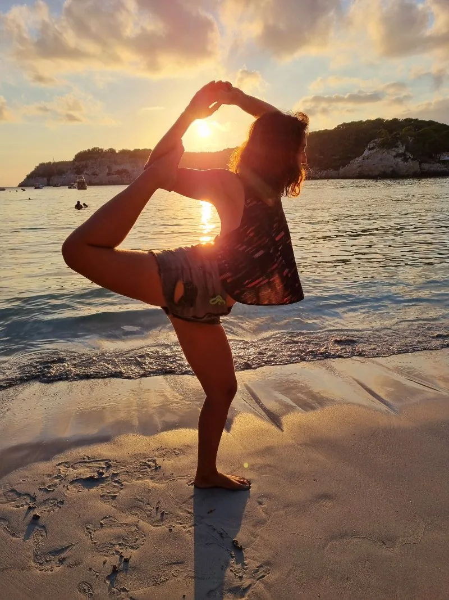

YOGA
"El yoga es la oportunidad perfecta para ser curioso sobre quién eres." — Jason Crandell

YOGA
Poco a poco el yoga se va expandiendo por el mundo, lo vamos conociendo. Yo sentí curiosidad por el yoga en el 2016 en Argentina. Algo me decía que la actividad física que hacía no me ayudaba a equilibrar mi cuerpo, aunque sudara y me sintiera fuerte, mi mente aún excitada, no relajaba.
Un impulso interior me invitó a probar una clase de yoga. Esa clase significó, de alguna manera, “un despertar”, ese mismo día sentí lo que era estar en equilibrio con mi mente, cuerpo y corazón.
El Yoga lo podríamos ver como uno de los caminos a la liberación de todos nuestros condicionamientos, romper nuestros patrones para rendirnos a la consciencia. Es un estado de dicha, de unión entre el “Ser” que habita en nosotros y el “Yo” que expresamos. Un modo de vida. La comunión entre el Ser y el Estar. Es ecuanimidad, paridad.
Técnicas de yoga, caminos a la liberación del Ser, hay muchos. Nos invitación comienza con sumergirnos con la práctica de Hatha yoga. HA significa “sol” y THA “luna”, es la fusión de los “opuestos”, la conciencia de unión.
En esta práctica utilizaremos:
la fuerza de las asanas, posturas que nos ayudan a volver al equilibrio, nos permiten evaluar cómo nos sentimos e indican la actitud que tenemos en cada momento de nuestra vida. Por ejemplo, si nos mantenemos en un postura podremos observar cómo nos balanceamos en esa postura, cómo nos sentimos, si hay esfuerzo, si incomoda más de un lado que del otro.
La respiración, -el prana-, la energía latente de nuestro cuerpo, cómo permite la unión del exterior con el interior.
Acompañaré a cada uno en el camino que decida su sentir.
Conduciremos conscientemente a la mente, cuerpo y emoción, con dulzura y paciencia para recordar, poco a poco, el potencial ilimitado que poseemos de sabiduría.
— Casandra Couso —
PREGUNTAS FRECUENTES
¿Necesito llevar accesorios para Yoga?
En el caso de que desees presenciar sesiones en nuestro espacio, contarás con el equipo necesario, cómo por ejemplo, mantas y esterillas. Sí prefieres sesiones online, seguramente en tu hogar cuentes con materiales que puedan reemplazar estos instrumentos, cómo libros de tapa dura y cojines van a resultar muy bien para la práctica.
¿Qué pasa si tengo una lesión?
Dependiendo del tipo de lesiones, dolores o incomodidades o limitaciones físicas que podemos estar atravesando en nuestra vida, puede ser un obstáculo para algunas posturas pero una apertura y oportunidad en otras. Observar las dificultades físicas nos permite conectar con el interior y comprendernos mejor. Sólo pedimos responsabilidad a la hora de llevar a cabo las posturas y tener en cuenta que necesitamos saber de tu estado para poder llevar todo al enriquecimiento espiritual, físico y mental.
¿Qué ropa debo llevar?
La que te resulte lo más cómoda posible, que te inspire libertad de movimiento y brinde un respirar creativo.
¿Puedo hacer si estoy embarazada?
Puede llevarse a cabo en cualquier momento del embarazo. Sólo pedimos responsabilidad en comunicar el estado de su embarazo para tomar precaución. Dependiendo del momento en que te encuentres del embarazo hay posturas que ya no realizaremos y nos centraremos más en una práctica suave y pausada.
¿Son clases individuales o grupales?
Tenemos disponibles ambas modalidades, y los invitamos a que en cualquier momento se sientan con la libertad de pasar de una modalidad a otra, pudiendo modificar sus horarios, días y necesidades según lo sientan en ese momento. Por ejemplo, si una persona empieza con sesiones individuales por que se siente más cómoda en un principio así; no hay ningún inconveniente que en cualquier momento comparta su práctica con otros.